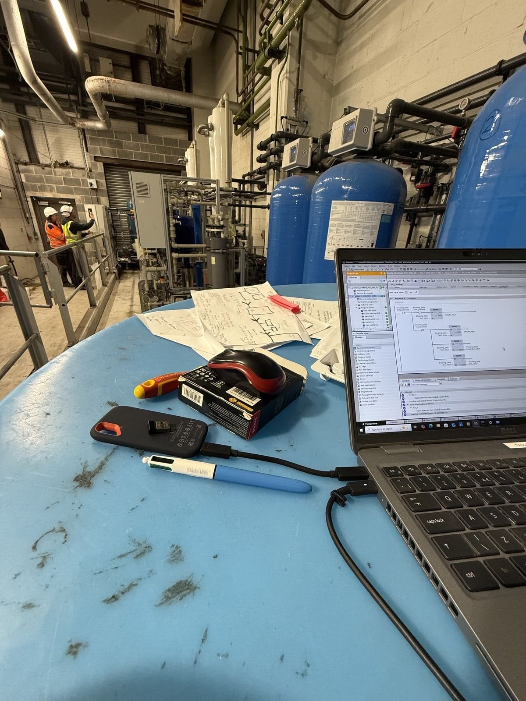
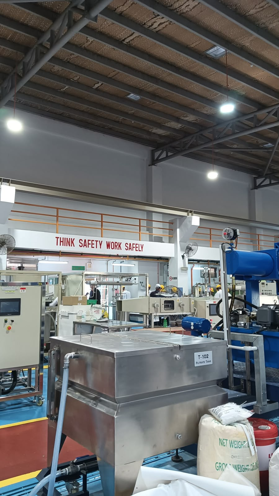

OtomasiOptimalisasi Throughput Lini Otomasi
Stabilisasi alur kerja operasional dan pengurangan waktu siklus rutin pada sistem konveyor otomatis.
Seorang operator berdedikasi dan profesional yang berfokus pada aktivitas operasional, efisiensi kerja, dan pengembangan berkelanjutan.
Latar belakang profesional, integritas operasional, dan komitmen keandalan kerja.
Pekerjaan Saat Ini: Operator
Profesional operasional yang berdedikasi dan berfokus pada keandalan sistem, disiplin prosedur operasional standar (SOP), serta optimalisasi proses kerja secara berkelanjutan di lingkungan industri berkinerja tinggi.
Inisiatif optimalisasi alur kerja, pengawasan sistem otomasi, dan manajemen telemetri.

OtomasiStabilisasi alur kerja operasional dan pengurangan waktu siklus rutin pada sistem konveyor otomatis.

Kendali ProsesPengawasan telemetri multi-layar, penentuan prioritas alarm, dan protokol tanggap anomali cepat.
Tertarik mendiskusikan alur kerja operasional, peluang kerja sama, atau konsultasi proses? Silakan kirim pesan atau hubungi langsung.
Isi formulir di bawah ini untuk memulai komunikasi langsung.